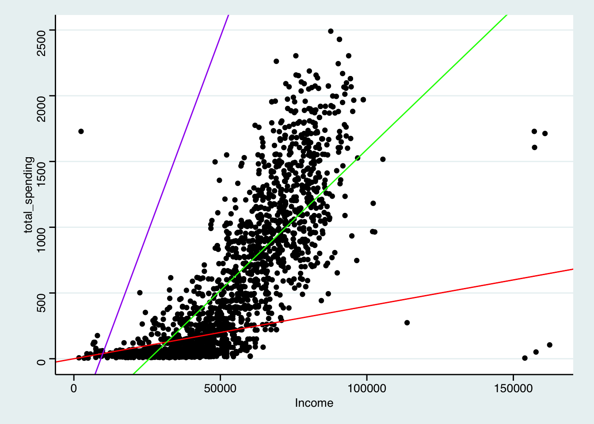

Class 12 OLS Regression Basics
1 Background of Regression
1.1 Conditional Mean in Causal Inference
In causal inference, we often care about the expected mean of the outcome variable (\(Y\)) conditional on treatment variables (\(X\)).
For example, in an RCT, Y is the outcome variable (e.g., purchase rate), X is whether or not customers receive the treatment (e.g., BMW ads), then from the basic identity of causal inference, we have \[ ATE = E[Y|X=1] - E[Y|X=0] \]
Question: how can we model the expected mean of outcome variable conditional on \(X\), \(E[Y|X = x]\)?
1.2 Linear Regression Models
If we assume a linear, additive function for \(E[Y|X=x]\), we have a simple linear regression model, as follows, \[ Y_i = \beta_0 + x_1 \beta_1 + x_2\beta_2+ \ldots + x_k\beta_k + \epsilon_i \]
\(y_i\): Outcome variable/dependent variable/regressand/response variable/LHS variable
\(\beta\): Regression coefficients/estimates/parameters; \(\beta_0\): intercept
\(x_k\): control variable/independent variable/regressor/explanatory variable/RHS variable
- Lower case such as \(x_1\) usually indicates a single variable while upper case such as \(X_{ik}\) indicates several variables
\(\epsilon_i\): error term/disturbance, which has the expected mean of 0, i.e., \(E[\epsilon|X] = 0\)
If we take the expectation of \(Y\), we have: \[ E[Y|X] = \beta_0 + x_1 \beta_1 + x_2\beta_2+ \ldots + x_k\beta_k \]
1.3 Why the Name “Regression”?
The term “regression” was coined by Francis Galton to describe a biological phenomenon: The heights of descendants of tall ancestors tend to regress down towards a normal average.
The term “regression” was later extended by Udny Yule and Karl Pearson to a more general statistical context (Pearson, 1903).
In supervised learning models, “regression” can have different meanings:1
- The regression-class models (OLS, Lasso, Ridge, etc.)
- Regression task
To establish causal inference, OLS regression model is all we need.
2 Estimation
2.1 How to Run Regression in R
In R, there are tons of packages that can run OLS regression.
In this module, we will be using the
fixestpackage, because it’s able to estimate high-dimensional fixed effects.
2.2 Report Regression Results
2.3 Parameter Estimation: Univariate Regression Case
- Let’s take a univariate regression2 as an example
\[ y = a + b x_1 + \epsilon \]
For each guess of a and b, we can compute the error for customer \(i\), \[ e_i = y_{i}-a-b x_{1i} \]
We can compute the sum of squared residuals (SSR) across all customers
\[ SSR =\sum_{i=1}^{n}\left(y_{i}-a-b x_{1i}\right)^{2} \]
Objective of estimation: Search for the unique set of \(a\) and \(b\) that can minimize the SSR.
This estimation method that minimizes SSR is called Ordinary Least Square (OLS).
2.4 Visualization: Estimation of Univariate Regression
- If in the Tesco dataset, if we regress total spending (Y) on income (X)

| Model | Color | Sum of Squared Error |
|---|---|---|
| \(Y = -552 + 0.06 * X\) | Purple | 1.6176047^{13} |
| \(Y = 0 + 0.004 * X\) | Red | 5.093683^{11} |
| \(Y = -552 + 0.021 * X\) | Green | 2.0205681^{9} |
2.5 Multivariate Regression
- The OLS estimation also applies to multivariate regression with multiple regressors.
\[ y_i = b_0 + b_1 x_{1} + ... + b_k x_{k}+\epsilon_i \]
- Objective of estimation: Search for the set of \(b\) that can minimize the sum of squared residuals.
\[ SSR= \sum_{i=1}^{n}\left(y_{i}-b_0 - b_1 x_{1} - ... - b_k x_{k} \right)^{2} \]
3 Interpretation
3.1 Coefficients Interpretation
- Now on your Quarto document, let’s run a new regression, where the DV is \(total\_spending\), and X includes \(Income\) and \(Kidhome\).
| Model 1 | |
|---|---|
| (Intercept) | −316.878*** |
| (26.972) | |
| Income | 0.019*** |
| (0.0004) | |
| Kidhome | −210.613*** |
| (16.282) | |
| Num.Obs. | 2000 |
| R2 | 0.658 |
| R2 Adj. | 0.658 |
| RMSE | 337.77 |
| Std.Errors | IID |
| + p < 0.1, * p < 0.05, ** p < 0.01, *** p < 0.001 |
- Controlling for Kidhome / everything else being equal / ceteris paribus, one unit increase in Income increases total spending by 0.019 pounds.
3.2 Standard Errors and P-values
Due to randomness of the error term, all coefficients estimates follow a \(t\) distribution.
Therefore, we need p-values to check whether the coefficients are statistically different from 0.
Income/Kidhomeis statistically significant at the 1% level.
3.3 R-squared
R-squared (R2) is a statistical measure that represents the proportion of the variance for a dependent variable that’s explained by an independent variable or variables in a regression model.
Interpretation: 65.8% of the variation in
Spendingcan be explained byIncomeandKidhome.As the number of variables increases, the \(R^2\) will naturally increase.
In causal inference tasks, \(R^2\) does not mean much.